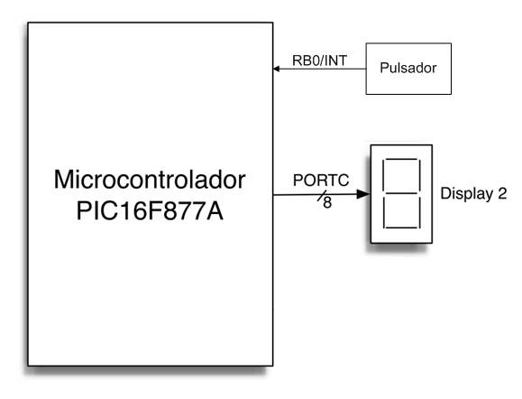
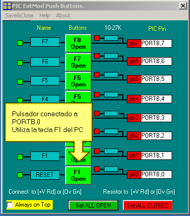
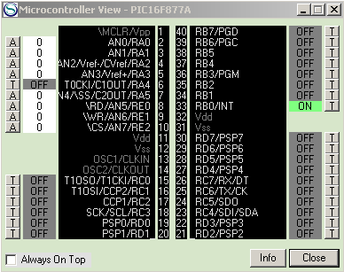

|
Ejercicio 2: Comparación
de consulta periódica y bloqueo de programa
|
 |
1. Objetivo
El objetivo de este ejercicio es permitir al alumno, a
través de un ejemplo, comprender mejor cómo se
implementa la consulta de estado por consulta periódica y
por bloqueo de programa, y entender las implicaciones que cada
una de estas opciones tienen respecto al tiempo de respuesta y a la
interactividad de una aplicación.
En este ejercicio no se pide al alumno desarrollar nuevo
código, sino sólo usar y analizar el
código proporcionado; sin embargo, el alumno
deberá esforzarse en entender el funcionamiento de este
código porque en el Ejercicio 4 se le exigirá
extender la funcionalidad del código para medir la
diferencia de tiempos exacta entre la respuesta del sistema en consulta
periódica y la de bloqueo del programa.
2. Sistema de test
Este ejercicio usa también un display de 7 segmentos, pero
emplea como entrada una de las lineas del puerto B, por lo que es
necesario controlar el display desde el puerto C. La
configuración del sistema de pruebas simulado es, entonces,
la mostrada en la siguiente figura:

La configuración y control del display a
través del puerto C es análoga a la ya hecha con
el puerto B, cambiando los registros PORTB y TRISB por PORTC y TRISC.
La configuración del puerto B, sin embargo, es
distinta, porque la linea 0 del puerto B (PORTB.0) se va a emplear como
linea de entrada, por lo que el bit 0 del registro TRISB debe ponerse a
1 (es decir,
TRISB.0 = 1).

El pulsador externo se implementa usando un programa
complementario al simulador, llamado PushButton.exe, que
puede encontrarse (y debe iniciarse) en el directorio C:\Archivos de programa\PIC
Simulator IDE.
Este programa se comunica automáticamente con el simulador
(usando automatización COM), y ofrece un array de 8 pulsadores,
que pueden configurarse individualmente para conectarse a cualquiera de
las lineas de E/S digital del PIC16F877A, y que pueden actuarse
mediante el interfaz gráfico o mediante las teclas de
función F1 a F8.
En nuestro caso, como vamos a conectar el interruptor F1 a la linea
PORTB.0, podemos usar directamente la configuración por defecto
de la aplicación, por lo que no es necesario modificar nada en
el programa.
IMPORTANTE:
El Ejercicio 1 ha dejado el display de 7 segmentos #1 (el de la
izquierda) conectado al puerto B; como el puerto B se va a emplear
ahora como entrada, debemos asegurarnos de desactivar dicho display de
7 segmentos. Esta animación muestra el proceso de desactivación.
3. Monitorización del estado de las lineas
La operación del pulsador F1 irá alternando el estado de la linea PORTB.0 entre el 1 lógico (tensión +V, color rojo) y el 0
lógico (0V, color verde). Para poder monitorizar, durante la
ejecución del programa, el valor al que el pulsador ha puesto a
la linea PORTB.0 es necesario usar la ventana Microcontroller View, accesible desde el menú Tools del simulador.

Nótese que el criterio de colores en esta ventana es distinto al de la aplicación PushButton.exe, puesto que el nivel lógico 1 (+V) se representa con el color verde, mientras que el 0 usa el color gris.
4. Realización del ejercicio
En este ejercicio se proporcionan al alumno dos programas BASIC
completos. Ambos programas usan PIO para consultar el estado del
pulsador, leyendo el valor del registro PORTB, pero los programas
difieren en la forma de realizar esta lectura:
- El primer programa
emplea consulta periódica, y entre cada dos consultas
consecutivas activa y desactiva el punto decimal del display, para dar
una indicación visible de actividad.
- El segundo código ejemplo usa bloqueo de programa, y se
mantiene en un bucle, leyendo continuamente el valor de PORTB, hasta
que detecta un cambio (es decir, la pulsación); sólo
entonces actualiza el display con el valor correspondiente.
La tarea que se requiere realizar por parte del alumno es usar estos dos programas para analizar:
- Las diferencias en interactividad (o falta de ella) de los
programas, especialmente desde el punto de vista de mantener al usuario
al tanto de si el programa está operando correctamente.
- Las diferencias en tiempo de respuesta de las aplicaciones (es
decir, el tiempo que transcurre entre el momento en que el usuario
pulsa el botón F1 y el momento en que se refleja esta
pulsación en un cambio en el display).